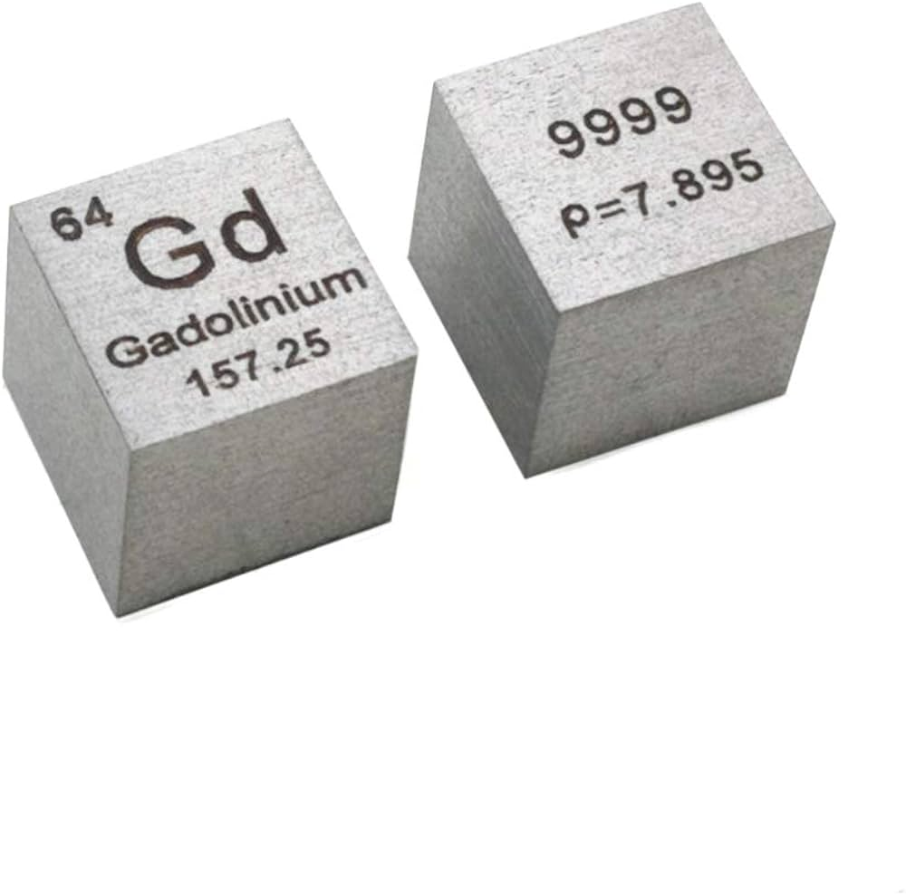

| Property |
Value |
| Element Name |
Gadolinium |
| Atomic Number |
64 |
| Atomic Mass |
157.25 u |
| Number of Isotopes |
7 stable isotopes |
| Melting Temperature |
1312 °C |
| Boiling Temperature |
3273 °C |
| Density |
7.90 g/cm³ |
| Electronegativity |
1.2 |
| Year of Discovery |
1880 |
| Abundance |
Present in moderate amounts in Earth's crust. |
| Technological Applications |
- Speakers and microphones (strong magnets).
- Smartphone and TV screens (enhancing colors and brightness).
- Miniature magnetic sensors used in cell phones and medical devices.
- Medical imaging, especially in MRI contrast agents.
|
| Where It Is Found in Phones |
- Small amounts in vibration motor magnets.
- Used in microphones and audio components.
- May be present in circuits to enhance efficiency.
|
| Major Deposit Locations |
Extracted from minerals like monazite and bastnäsite, with primary production in China, USA, India, and Brazil. |
| Environmental Effects |
- May contaminate soil and water if not disposed of properly.
- Toxic to plants and animals at high concentrations.
- Recycling is difficult but important.
|
| Health Effects |
Elemental gadolinium is not highly dangerous, but some compounds can be toxic if inhaled or ingested in large amounts. |
